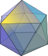
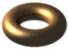
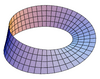
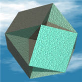
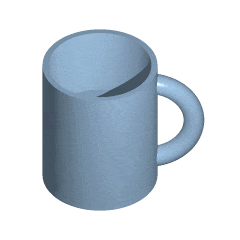

Euler's Formula
this page is about the one used in Geometry and Graphs)
Euler's Formula
For any polyhedron that doesn't intersect itself, the
- Number of Faces
- plus the Number of Vertices (corner points)
- minus the Number of Edges
always equals 2
This is usually written:
F + V − E = 2

Example: Cube
A cube has:
- 6 faces
- 8 vertices (corner points)
- 12 edges

Example: Triangular Prism
This prism has:
- 5 faces
- 6 vertices (corner points)
- 9 edges
Example With Platonic Solids
Let's try with the 5 Platonic Solids:
| Name | Faces | Vertices | Edges | F+V-E | |
|---|---|---|---|---|---|
| Tetrahedron |  |
4 | 4 | 6 | 2 |
| Cube |  |
6 | 8 | 12 | 2 |
| Octahedron |  |
8 | 6 | 12 | 2 |
| Dodecahedron |  |
12 | 20 | 30 | 2 |
| Icosahedron |  |
20 | 12 | 30 | 2 |
(In fact Euler's Formula can be used to prove there are only 5 Platonic Solids)
 |
Why always 2? 7 + 8 − 13 = 2 |
 |
Or try to include another vertex, and we get an extra edge: 6 + 9 − 13 = 2. |
So it seems:
"No matter what we do, we always end up with 2"
(but only for this type of Polyhedron ... read on!)
Flattened Out
It may be easier to see when we "flatten out" the shapes into what is called a graph (a diagram of connected points, not the data plotting kind of graph).
A tetrahedron can be drawn like this:

Note that one of the "faces" is the outside region, like this:

So there are 4 regions (faces), 4 vertices and 6 lines (edges):
F + V − E = 4 + 4 − 6 = 2
Let's try this with a cube. Here is one way to show it:

There are 6 regions (counting the outside), 8 vertices and 12 edges:
F + V − E = 6 + 8 − 12 = 2
We can discover what is going on when we build up graphs from just one vertex:
 With one vertex we have one region (the whole area), the one vertex and no edges: 1 + 1 − 0 = 2
With one vertex we have one region (the whole area), the one vertex and no edges: 1 + 1 − 0 = 2  Add another vertex. We still have one region, but now have two vertices and one edge: 1 + 2 − 1 = 2
Add another vertex. We still have one region, but now have two vertices and one edge: 1 + 2 − 1 = 2  Adding another vertex we can have two regions (inside and outside), three vertices and three edges: 2 + 3 − 3 = 2
Adding another vertex we can have two regions (inside and outside), three vertices and three edges: 2 + 3 − 3 = 2  Or we could have one region, three vertices and two edges (this is allowed because it is a graph, not a solid shape): 1 + 3 − 2 = 2
Or we could have one region, three vertices and two edges (this is allowed because it is a graph, not a solid shape): 1 + 3 − 2 = 2  Adding another vertex we can have several different graphs ... ... one of those graphs is a tetrahedron: 4 + 4 − 6 = 2
Adding another vertex we can have several different graphs ... ... one of those graphs is a tetrahedron: 4 + 4 − 6 = 2There is always a balance between faces, vertices and edges.
Your turn! Turn the tetrahedron graph into a cube graph. See if you can make an octahedron graph, too.
(Isn't it amazing how we can show 3d shapes as a series of connected points!)
The Sphere

All Platonic Solids (and many other solids) are like a Sphere ... we can reshape them so that they become a Sphere (move their corner points, then curve their faces a bit).
For this reason we know that F + V − E = 2 for a sphere
(Be careful, we cannot simply say a sphere has 1 face, and 0 vertices and edges, for F+V−E=1)
So, the result is 2 again.
But Not Always 2 ... !
Now that you see how it works, let's discover how it doesn't work.
We join up two opposite corners of an icosahedron like this:
It is still an icosahedron (but no longer convex).
In fact it looks a bit like a drum where someone has stitched the top and bottom together.
There are the same number of edges and faces ... but one less vertex!
So:
F + V − E = 1
Oh No! It doesn't always add to 2.
The reason it didn't work was that this new shape is basically different ... that joined bit in the middle means that two vertices become 1.
Euler Characteristic
So, F+V−E can equal 2, 1 or other values, leading to this general formula:
F + V − E = χ
Where χ is called the "Euler Characteristic".
Here are a few examples:
| Shape | χ | |
|---|---|---|
| Sphere | 2 | |
| Torus |  |
0 |
| Mobius Strip |  |
0 |

And the Euler Characteristic can also be less than zero.
This is the "Cubohemioctahedron": It has 10 faces (it may look like more, but some of the "inside" faces are really just one face), 24 edges and 12 vertices, so:
F + V − E = −2
In fact the Euler Characteristic is a basic idea in Topology (the study of the Nature of Space).
Donut and Coffee Cup

(Animation courtesy
Wikipedia User:Kieff)
Last, this discussion would be incomplete without showing that a Donut and a Coffee Cup are really the same!
Well, they can be deformed into one another.
We say the two objects are "homeomorphic" (from Greek homoios = identical and morphe = shape)
Just like the platonic solids are homeomorphic to the sphere.
And your body is homeomorphic to a torus if you pinch your nose closed.